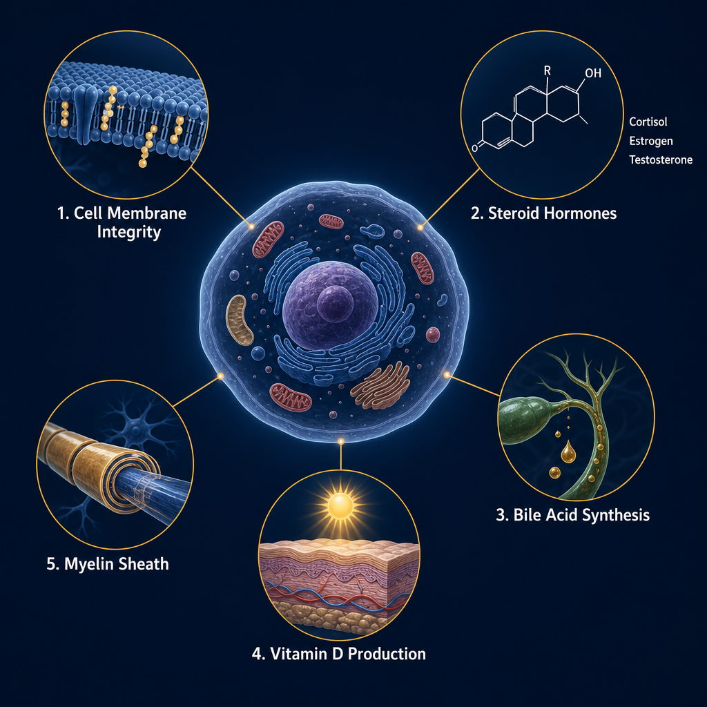
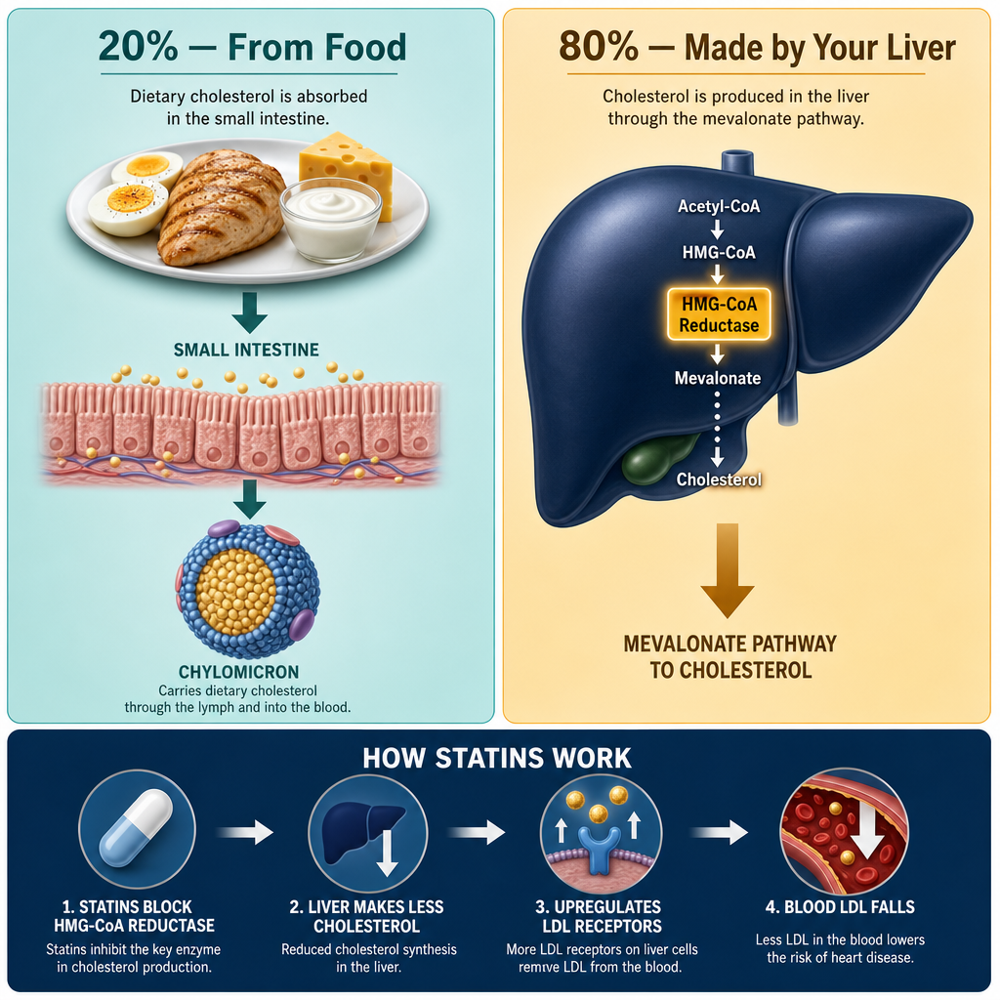
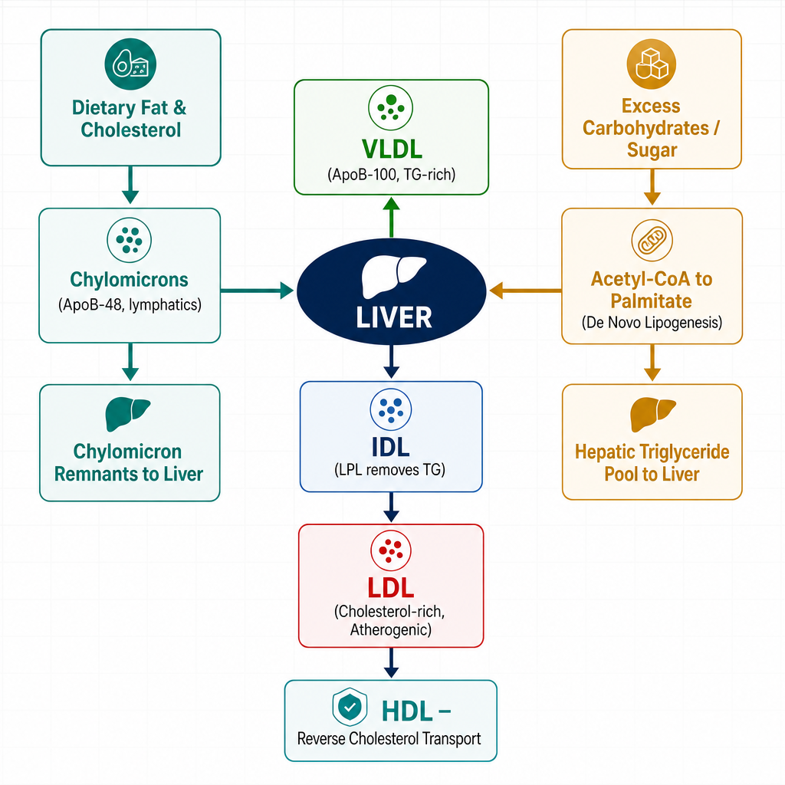
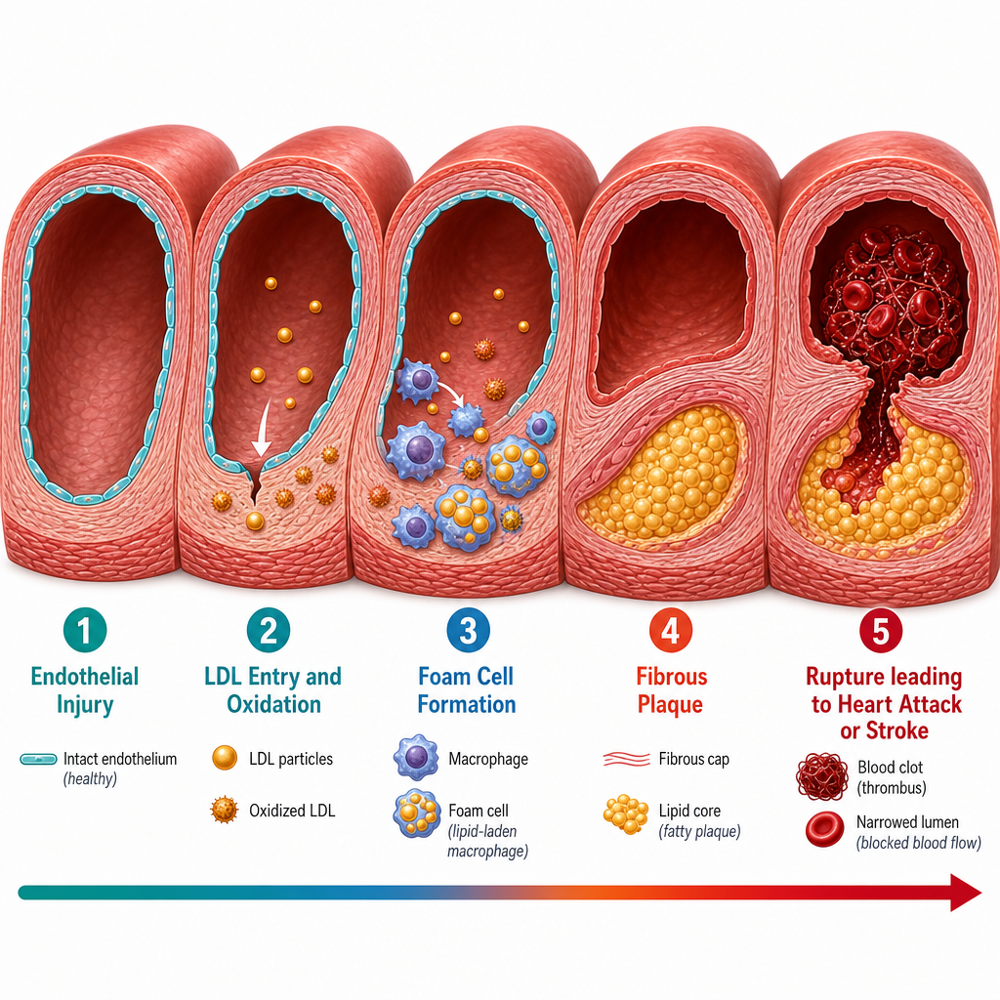
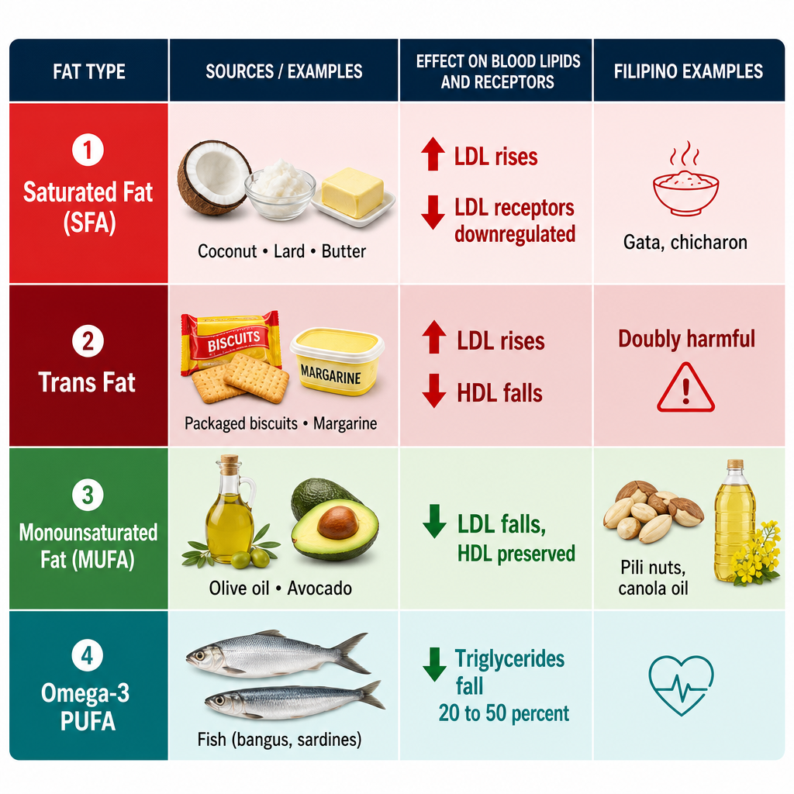
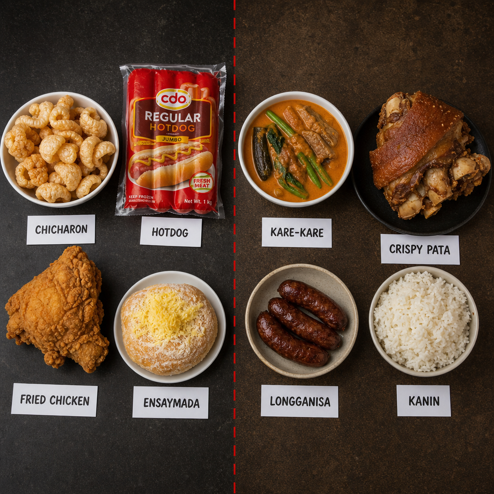
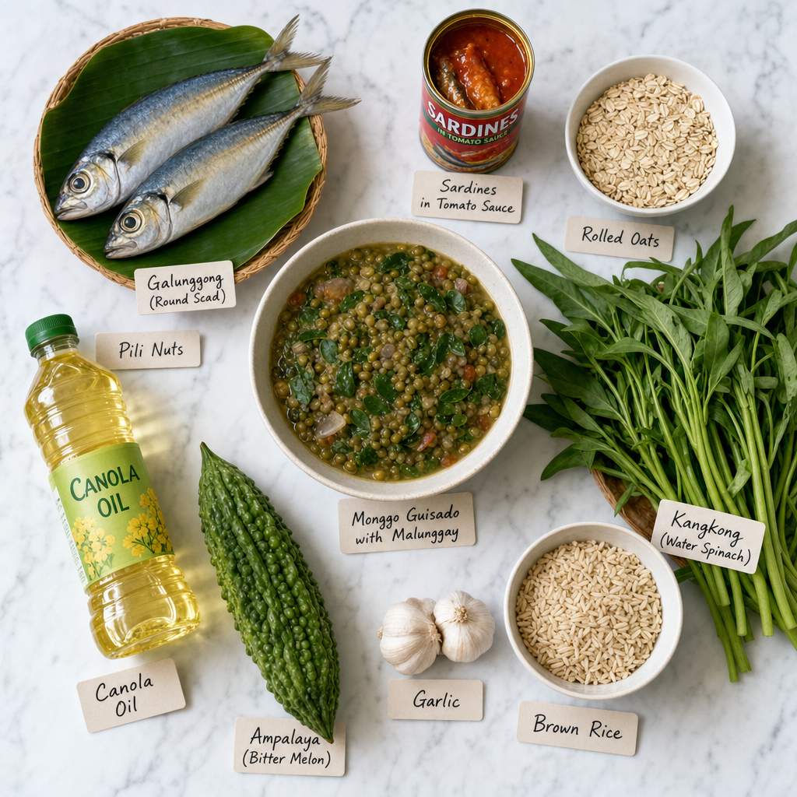
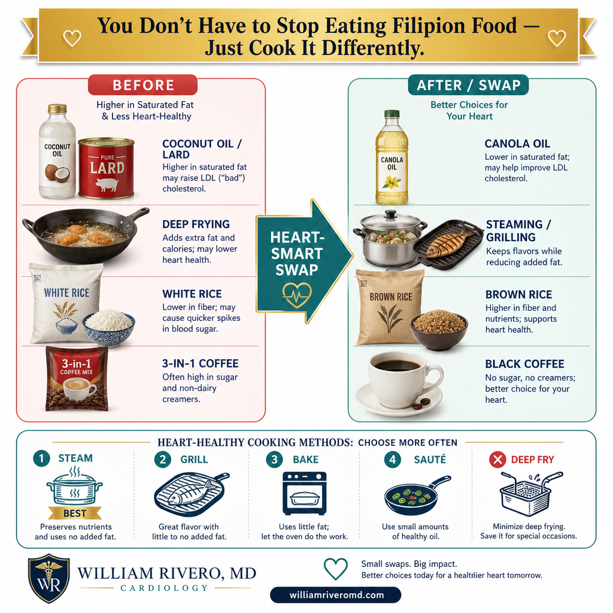
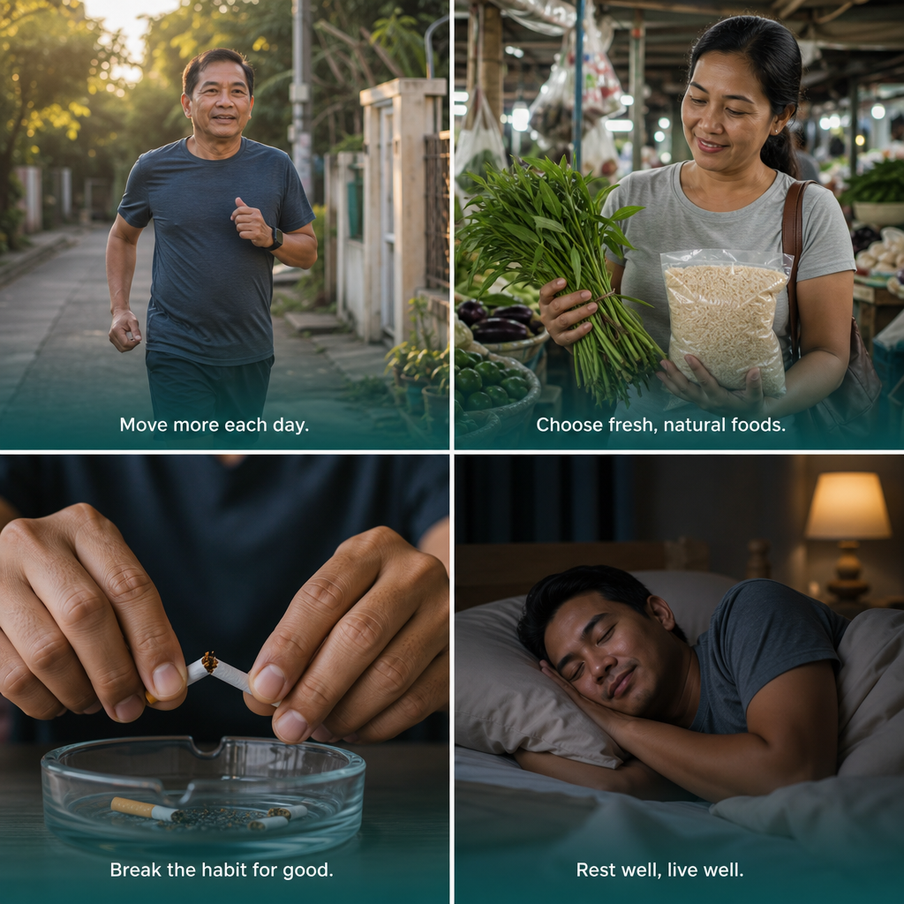

What Is Cholesterol — and Why Does Your Body Make It?

Cholesterol is essential for cell membranes, steroid hormones, bile acids, vitamin D, myelin, and fat digestion — not just a risk factor.Ang kolesterol ay mahalaga para sa mga lamad ng cell, steroid hormones, bile acids, vitamin D, myelin, at pagtunaw ng taba.Ang kolesterol importante alang sa cell membranes, steroid hormones, bile acids, vitamin D, myelin, ug pagtunaw sa tambok.
Cholesterol is not a toxin. It is a waxy, fat-like sterol that every cell in your body requires. The problem is not that you have cholesterol — it is that modern diets, excess body fat, and insulin resistance push it into configurations that damage blood vessels.
Structurally, cholesterol is a four-ring steroid nucleus with a single hydroxyl group and a hydrocarbon side chain. It is not soluble in water, which is why it must be packaged into protein-coated particles called lipoproteins to travel through the bloodstream.
The Roles Cholesterol Plays
Cell Membrane Integrity
Cholesterol is embedded between phospholipid bilayers in every cell membrane. It regulates fluidity — keeping membranes from becoming too rigid in cold or too fluid in heat — and anchors signaling proteins in membrane "rafts."
Steroid Hormone Precursor
All steroid hormones derive from cholesterol: cortisol (stress response), aldosterone (sodium/blood pressure), estrogen and progesterone (female reproductive), and testosterone (male reproductive and anabolic).
Bile Acid Synthesis
The liver converts cholesterol into bile acids — the detergents that emulsify dietary fats in the small intestine, making fat-soluble vitamins (A, D, E, K) and fatty acids absorbable. Bile acids are the body's primary route for cholesterol excretion.
Vitamin D Production
7-dehydrocholesterol in skin is converted to pre-vitamin D₃ by UV-B radiation, then activated in the liver and kidneys. Without adequate cholesterol, sunlight exposure alone cannot produce sufficient vitamin D.
Myelin Sheath
The brain and nervous system are especially cholesterol-rich. Myelin — the insulating sheath around nerve fibers that enables fast electrical conduction — is approximately 25% cholesterol by dry weight.
Lipid Digestion Support
Beyond bile acids, cholesterol forms mixed micelles with bile salts that solubilize dietary lipids, facilitating their absorption through intestinal enterocytes and onward transport.
Your liver makes ~80% of your cholesterol regardless of diet
Roughly 800–1,000 mg of cholesterol is synthesized endogenously each day. Dietary cholesterol contributes the remaining 20%. This is why some people with excellent diets still have elevated cholesterol — their liver simply makes more of it, often driven by genetics, excess carbohydrates, or insulin resistance.
Where Does Cholesterol Come From?

Your liver manufactures about 80% of your cholesterol regardless of what you eat — which is why diet alone often cannot normalize elevated levels.Ang iyong atay ay gumagawa ng humigit-kumulang 80% ng iyong kolesterol anuman ang iyong kinakain — kaya naman ang diyeta lamang ay madaliang hindi sapat.Ang imong atay naghimo og mga 80% sa imong kolesterol bisan unsa ang imong gikaon — mao nga ang diyeta lang kasagaran dili igo.
Cholesterol reaches your bloodstream through two distinct routes: it is either synthesized endogenously by the liver (and to a lesser extent by other cells), or it is absorbed from food and delivered via the gut.
The Endogenous Pathway — HMG-CoA Reductase
The starting material for all cholesterol synthesis is acetyl-CoA — the same two-carbon unit produced from glucose, fatty acids, and amino acid breakdown. The mevalonate pathway converts acetyl-CoA into cholesterol through more than 20 enzymatic steps. The critical, rate-limiting step is the conversion of HMG-CoA (3-hydroxy-3-methylglutaryl-CoA) to mevalonate, catalyzed by HMG-CoA reductase.
Why statins work — and why they cannot eliminate cholesterol
Statins competitively inhibit HMG-CoA reductase, reducing hepatic cholesterol synthesis. The liver responds by upregulating LDL receptors on its surface to pull more LDL-cholesterol from the bloodstream — the primary mechanism by which statins lower circulating LDL. However, because cholesterol synthesis is essential for cell function, no drug completely abolishes it.
The mevalonate pathway also produces coenzyme Q10 (ubiquinone), dolichol (glycoprotein synthesis), and isoprenoids — which explains why some patients on high-dose statins experience muscle symptoms: CoQ10 depletion in skeletal muscle mitochondria.
The Exogenous Pathway — Chylomicrons
Dietary cholesterol and triglycerides (from fats and oils) are digested in the small intestine by pancreatic lipase and bile salts. Intestinal enterocytes reassemble the absorbed components and package them into chylomicrons — large, triglyceride-rich lipoproteins coated with apolipoprotein B-48.
Chylomicrons enter the lymphatic system (not the portal vein directly) and drain into the bloodstream at the thoracic duct. Peripheral tissues extract triglycerides via lipoprotein lipase (LPL), shrinking the chylomicron into a chylomicron remnant enriched in cholesterol esters, which is then cleared by the liver via apolipoprotein E receptors.
How Carbohydrates Become Cholesterol and Fat
"I barely eat fat but my cholesterol and triglycerides are high." This is one of the most common — and most frustrating — things patients say. The answer lies in de novo lipogenesis: the liver's ability to convert excess carbohydrates into fat and, ultimately, into circulating lipoproteins.
Step 1 — Glucose to Acetyl-CoA
When you eat carbohydrates, glucose enters cells and undergoes glycolysis, producing pyruvate. Pyruvate is transported into mitochondria and converted to acetyl-CoA by the pyruvate dehydrogenase complex. Under normal energy conditions, acetyl-CoA enters the TCA cycle to generate ATP. When energy supply exceeds demand — as happens after a carbohydrate-heavy meal — excess acetyl-CoA is exported from mitochondria into the cytoplasm as citrate and converted back to acetyl-CoA for fat synthesis.
Step 2 — De Novo Lipogenesis (DNL)
In the liver, excess acetyl-CoA is converted to malonyl-CoA by acetyl-CoA carboxylase, then elongated by fatty acid synthase (FAS) into palmitate — a 16-carbon saturated fatty acid. Palmitate is the primary product of DNL. It can be elongated and desaturated into other fatty acids, or esterified with glycerol to form triglycerides.
Fructose is a particularly potent driver of de novo lipogenesis
Unlike glucose, fructose bypasses the rate-limiting enzyme phosphofructokinase-1 (PFK-1). It enters the glycolytic pathway below this checkpoint, flooding the liver with acetyl-CoA substrate with no "traffic control." This makes sugar-sweetened beverages, fruit juices, and high-fructose corn syrup unusually effective at raising triglycerides and driving hepatic fat accumulation — independent of total caloric intake. A can of regular soda contains ~25 g of fructose; a glass of commercial orange juice contains ~12 g.
Step 3 — VLDL Assembly and Secretion
The liver packages hepatic triglycerides together with cholesterol, phospholipids, and apolipoprotein B-100 into very low-density lipoprotein (VLDL). VLDL is the liver's vehicle for exporting fat to peripheral tissues. The more triglycerides the liver accumulates — whether from excess dietary fat, excess dietary carbohydrate via DNL, or alcohol — the more VLDL it secretes into the bloodstream.
Step 4 — The VLDL → IDL → LDL Cascade
Once in the circulation, VLDL encounters lipoprotein lipase (LPL) on the surface of muscle and fat tissue capillaries. LPL hydrolyzes the triglyceride core, releasing fatty acids for cellular uptake. As VLDL loses triglycerides it shrinks, first into intermediate-density lipoprotein (IDL), and then — after further triglyceride removal and exchange of apolipoproteins — into the smaller, denser, cholesterol-enriched LDL (low-density lipoprotein).

Two separate pathways — dietary fat (left) and excess carbohydrates/sugar (right) — both funnel into the liver to produce VLDL, which becomes LDL in the bloodstream.Dalawang magkahiwalay na landas — pagkain na may taba (kaliwa) at labis na karbohidrat/asukal (kanan) — pareho itong napupunta sa atay upang makagawa ng VLDL, na nagiging LDL sa dugo.Duha ka bulag nga agianan — pagkaon nga adunay tambok (wala) ug sobra nga karbohidrat/asukal (tuo) — pareho nga moadto sa atay aron makahimo og VLDL, nga mahimong LDL sa dugo.
Why This Matters Clinically
The VLDL → LDL cascade means that anything which increases hepatic triglyceride production will ultimately raise LDL particle count. A diet high in refined carbohydrates and sugar — even with very low fat intake — can therefore worsen both triglycerides and LDL. This is why the TG/HDL-C ratio (in mg/dL) is a useful surrogate for atherogenic dyslipidemia and insulin resistance: when TG is high and HDL is low, the liver is in an overproduction state generating many small, dense LDL particles — the most atherogenic form.
Reading Your Lipid Panel
A standard fasting lipid panel measures four values. Each reflects a different aspect of your cardiovascular risk. Understanding what each means — not just whether it is "high" or "low" — helps you and your physician make better decisions.
| Measurement | What It Represents | Desirable | Borderline | High / Concerning |
|---|---|---|---|---|
| Total Cholesterol (TC) | Sum of all cholesterol in all lipoprotein particles. A screening value — must be interpreted alongside LDL and HDL. | <200 mg/dL | 200–239 | ≥240 |
| LDL-Cholesterol (LDL-C) | Cholesterol carried in LDL particles. The primary atherogenic driver — the main target of lipid-lowering therapy. | <100 mg/dL | 100–129 | ≥130 (high risk: ≥70) |
| HDL-Cholesterol (HDL-C) | Cholesterol in HDL particles. Higher is generally protective. Low HDL is an independent cardiovascular risk factor. | ≥60 mg/dL | 40–59 (M) · 50–59 (F) | <40 (M) · <50 (F) |
| Triglycerides (TG) | Circulating fat in VLDL and chylomicrons. Reflects dietary carb and fat intake, alcohol use, and insulin resistance. | <150 mg/dL | 150–199 | 200–499 · ≥500 = pancreatitis risk |
| Non-HDL-C | TC minus HDL-C. Captures cholesterol in all atherogenic particles (LDL + VLDL + IDL + Lp(a)). Often more predictive than LDL-C alone. | <130 mg/dL | 130–159 | ≥160 |
LDL-C targets depend on your cardiovascular risk category
The values above are general-population thresholds. If you have established heart disease, diabetes, CKD, or multiple risk factors, your LDL-C target may be significantly lower (e.g., <70 mg/dL or even <55 mg/dL for very high-risk patients). See the Dyslipidemia 2026 Guidelines guide for individualized risk stratification and treatment targets.
What Happens When Cholesterol Is Imbalanced

Atherosclerosis is a slow, silent process — from a healthy artery wall to foam cells, fibrous plaque, and eventual rupture that triggers a heart attack or stroke.Ang atherosclerosis ay isang mabagal at walang sintomas na proseso — mula sa malusog na dingding ng arterya hanggang sa foam cells, fibrous plaque, at pagputok na nagdudulot ng atake sa puso o stroke.Ang atherosclerosis usa ka hinay ug hilom nga proseso — gikan sa himsog nga dingding sa arterya hangtod sa foam cells, fibrous plaque, ug pagbuto nga naghimong atake sa kasingkasing o stroke.
Atherosclerosis — Step by Step
Atherosclerosis is not simply "fat clogging a pipe." It is a chronic inflammatory disease initiated by LDL particles and perpetuated by immune dysfunction. It begins silently in the second and third decades of life and takes decades to produce a clinical event.
Endothelial Injury
The inner lining of arteries (the endothelium) is damaged by high blood pressure, cigarette smoke, high blood glucose, or oxidative stress. This increases permeability and promotes the expression of adhesion molecules that recruit white blood cells.
LDL Particle Entry and Oxidation
LDL particles cross the damaged endothelium and become trapped in the arterial wall. Trapped LDL is modified by reactive oxygen species into oxidized LDL (oxLDL) — a highly inflammatory molecule. Small, dense LDL particles are more susceptible to oxidation than large, buoyant LDL; this is why the LDL particle type matters, not just total LDL-C concentration.
Foam Cell Formation
Monocytes recruited to the arterial wall differentiate into macrophages that engulf oxLDL via scavenger receptors. Unlike normal LDL uptake (which is regulated), scavenger receptor uptake is unregulated — macrophages keep ingesting oxLDL until they become engorged with cholesterol and transform into foam cells, the hallmark of early atherosclerosis.
Fatty Streak → Fibrous Plaque
Foam cells die and release their cholesterol content into the extracellular space, forming a necrotic lipid core. Smooth muscle cells migrate from the medial layer and deposit a fibrous cap of collagen over the core. The plaque grows progressively, narrowing the arterial lumen.
Plaque Rupture → Acute Coronary Syndrome or Stroke
A vulnerable plaque — one with a large lipid core and thin fibrous cap — can rupture suddenly. Ruptured plaque exposes thrombogenic material that triggers immediate clot formation. This acute thrombosis can partially or completely block the vessel, causing a heart attack (if a coronary artery) or ischemic stroke (if a cerebral artery). Importantly, many ruptures occur in plaques that were not severely narrowing the vessel — making pre-event detection difficult without advanced imaging.
High Triglycerides — Acute Pancreatitis Risk
When triglycerides exceed 500 mg/dL, the risk of acute pancreatitis increases substantially. At levels above 1,000 mg/dL, pancreatitis is common and can be life-threatening. The mechanism involves hydrolysis of triglycerides within pancreatic capillaries by pancreatic lipase, releasing toxic free fatty acids that damage acinar cells and trigger systemic inflammation. Patients with severe hypertriglyceridemia require urgent treatment (dietary fat restriction, omega-3 supplementation, fibrates, and sometimes insulin therapy to activate LPL).
Very Low Cholesterol
While high cholesterol dominates clinical concern, persistently very low total cholesterol (<120–130 mg/dL) may indicate underlying disease: advanced liver dysfunction (impaired synthesis), malnutrition, hyperthyroidism, or occult malignancy. In patients with CKD and on dialysis, a paradoxical "reverse epidemiology" has been observed — lower cholesterol associates with higher mortality, likely reflecting chronic inflammation and protein-energy wasting rather than a protective effect of low cholesterol per se.
Understanding Dietary Fats and Their Effects on Lipids

Not all fats are equal — saturated and trans fats raise LDL, while MUFAs (olive oil, pili nuts) and omega-3s (galunggong, sardines) are heart-protective.Hindi pantay-pantay ang lahat ng taba — ang saturated at trans fats ay nagpapataas ng LDL, habang ang MUFAs (olive oil, pili nuts) at omega-3s (galunggong, sardinas) ay nagpoprotekta sa puso.Dili tanan nga tambok managsama — ang saturated ug trans fats nagpataas sa LDL, samtang ang MUFAs (olive oil, pili nuts) ug omega-3s (galunggong, sardinas) nagpanalipod sa kasingkasing.
Not all fats behave the same way in the body. The type of fat you consume — not just the quantity — determines whether it raises, lowers, or has no effect on your LDL, HDL, and triglycerides.
Saturated Fatty Acids (SFA)
Saturated fats — those with no double bonds in their carbon chain — raise LDL-C by downregulating LDL receptor expression on hepatocytes, reducing the liver's ability to clear LDL from the bloodstream. The effect is strongest with lauric (C12), myristic (C14), and palmitic (C16) acids. Stearic acid (C18) is a notable exception — it is rapidly converted to oleic acid in the body and has a neutral effect on LDL.
Major sources: coconut oil (92% SFA), palm oil, lard, butter, full-fat dairy, fatty cuts of pork and beef, and processed meats. In the Filipino diet, coconut milk (gata) is an especially significant source — a single serving of kare-kare or laing can contain 15–25 g of saturated fat.
Trans Fatty Acids
Trans fats are the most harmful dietary fat for cardiovascular health. They raise LDL-C and lower HDL-C simultaneously — a doubly atherogenic combination. They are primarily created industrially through partial hydrogenation of vegetable oils (producing partially hydrogenated oils, or PHOs). While PHOs are largely banned in many countries, they persist in imported processed foods, some margarines, commercial baked goods, and fried fast food. Check ingredient labels for "partially hydrogenated" even when the nutrition facts show 0 g trans fat (allowed when <0.5 g per serving).
Monounsaturated Fatty Acids (MUFA)
MUFAs (primarily oleic acid, C18:1 — the dominant fat in olive oil and avocado) lower LDL-C when they replace saturated fats in the diet, without reducing HDL-C. This makes olive oil, avocados, and many nuts (particularly almonds and pili nuts) among the most favorable dietary fat sources. The Mediterranean diet's cardiovascular benefit is largely attributable to its high MUFA content.
Polyunsaturated Fatty Acids (PUFA)
Omega-6 PUFAs (linoleic acid — found in vegetable oils like sunflower and corn oil) lower LDL-C when they replace saturated fat. However, very high omega-6 intake relative to omega-3 may promote a pro-inflammatory state; the ideal omega-6:omega-3 ratio is approximately 4:1, though typical Western diets are 15–20:1.
Omega-3 PUFAs — specifically EPA (eicosapentaenoic acid) and DHA (docosahexaenoic acid), found in fatty fish — primarily lower triglycerides (by 20–50% at therapeutic doses) through suppression of hepatic VLDL secretion. ALA (alpha-linolenic acid from flaxseed and walnuts) has a more modest effect. High-dose omega-3 (4 g/day of EPA as icosapent ethyl) has been shown in the REDUCE-IT trial to reduce cardiovascular events in high-risk patients already on statins.
Dietary Cholesterol
The older dietary advice to strictly limit egg intake (to <3 per week) was based on the assumption that dietary cholesterol directly raises serum cholesterol. Current evidence is more nuanced. For most people, dietary cholesterol has a smaller effect on serum LDL-C than saturated fat — because the liver compensates by reducing its own cholesterol synthesis when dietary intake increases (cholesterol homeostasis). However, approximately 25% of people are "hyper-responders" who show meaningful LDL increases from dietary cholesterol. Patients with existing high LDL or cardiovascular disease are generally advised to moderate dietary cholesterol (<200–300 mg/day).
Soluble Fiber and Plant Sterols
Soluble fiber (oats, psyllium, legumes, barley) forms a gel in the small intestine that traps bile acids and prevents their reabsorption. The liver must then convert more cholesterol into new bile acids — effectively removing cholesterol from circulation. 5–10 g/day of soluble fiber reduces LDL-C by approximately 5–11 mg/dL.
Plant sterols and stanols compete with cholesterol for absorption in the intestinal brush border. At 2 g/day (found in fortified foods or supplements), they reduce LDL-C by 8–10% without affecting HDL or triglycerides.
Foods to Limit or Avoid — Philippine Context

Avoid: chicharon, processed meats, battered fried food, and butter-rich pastries. Limit: coconut milk dishes (kare-kare, laing), fatty pork, and large rice portions.Iwasan: chicharon, processed meats, pritong pagkain, at matabang pastries. Limitahan: lutong may gata (kare-kare, laing), mataba na baboy, at malaking bahagi ng kanin.Likayi: chicharon, processed meats, prito nga pagkaon, ug tambok nga pastries. Limitahan: lutong adunay gata (kare-kare, laing), tambok nga baboy, ug dagkong bahin sa kan-on.
The following are organized by degree of concern. "Avoid" means the food is high in saturated or trans fat with minimal nutritional benefit. "Limit" means the food has some nutritional value or cultural significance but should be consumed occasionally and in small portions.
Avoid — Very High Saturated / Trans Fat
- Chicharon — almost entirely rendered fat; one small bag (~40 g) contains 12–15 g saturated fat
- Partially hydrogenated margarine (some local brands) — trans fat source; replace with canola or olive oil
- Commercial fried fast food — battered fried chicken, french fries cooked in palm or partially hydrogenated oil
- Commercial pastries and cookies — cream-filled biscuits, ensaymada with butter-rich filling
- Processed meats with fillers — low-quality hotdog, Vienna sausage with high fat content
Limit — Moderate Saturated Fat, Occasional OK
- Lechon, liempo, crispy pata — pork skin and belly are high in saturated fat; enjoy on special occasions, small portions only
- Kare-kare, laing, ginataang dishes — coconut milk (gata) adds 8–15 g saturated fat per serving; reduce gata or use light coconut milk
- Longganisa and tocino — high in both saturated fat and sodium; home-made or lean versions are preferable
- Full-fat dairy — cheese, cream, full-fat milk; replace with low-fat or skim varieties
- Egg yolks — 1–2 eggs per day is generally acceptable for most people; limit to 1/day if LDL is already elevated
- White rice in large amounts — not high in fat, but large portions drive TG elevation via DNL; moderate portion with more vegetables
Coconut oil — the cultural debate
Coconut oil is 92% saturated fat, the highest of any cooking fat. It raises LDL-C consistently in clinical trials. Despite claims about its medium-chain triglyceride (MCT) content, most of its fat (44%) is lauric acid (C12) — a long-chain fatty acid by some classifications that behaves like SFA in raising LDL. The American Heart Association and most major cardiology guidelines recommend against using coconut oil as a primary cooking fat for patients with elevated LDL or cardiovascular risk. For general population cooking, use canola or olive oil instead.
Foods to Embrace — Heart-Healthy Philippine Choices

Heart-healthy Filipino staples widely available at any wet market: oily fish, monggo, kangkong, ampalaya, pili nuts, garlic, and brown rice.Mga Filipino na pagkain na mabuti para sa puso at madaling makita sa palengke: malangsa na isda, monggo, kangkong, ampalaya, pili nuts, bawang, at brown rice.Mga Filipino nga pagkaon nga maayo alang sa kasingkasing ug dali makit-an sa merkado: tambok nga isda, monggo, kangkong, ampalaya, pili nuts, bawang, ug brown rice.
Many of the most effective cholesterol-lowering foods are already part of traditional Filipino cuisine and are widely available at wet markets and local stores.
Oily Fish — Omega-3 Rich
- Sardinas (canned sardines) — affordable, high in EPA/DHA; choose in water or tomato sauce, not oil
- Bangus (milkfish) — moderate omega-3 when grilled or steamed; avoid deep-fried
- Galunggong (round scad) — one of the best value-for-money omega-3 sources in PH markets
- Salmon, mackerel, tuna — higher in EPA/DHA; 2 servings per week recommended
- Tuyo (dried herring) — good omega-3 source but high in sodium; limit to once weekly
Legumes — Soluble Fiber & Protein
- Monggo (mung beans) — excellent soluble fiber; monggo guisado is a heart-healthy staple
- Kadyos (pigeon peas) — high in protein and fiber; good for replacing fatty meat in soups
- Black beans, red kidney beans — versatile; add to soups, stews, or rice
- Tokwa (firm tofu) — plant protein with neutral-to-positive lipid effects; replace pork in dishes
- Edamame — increasingly available; soy protein modestly lowers LDL-C
Vegetables
- Malunggay (moringa) — fiber, antioxidants; add to soups and stews freely
- Kangkong (water spinach) — inexpensive, high fiber; sauté with minimal oil
- Ampalaya (bitter melon) — evidence for modest LDL reduction; also benefits blood sugar
- Eggplant, okra — both contain soluble fiber; okra's mucilage is particularly effective at trapping bile acids
- Kamote (sweet potato) — soluble fiber, low glycemic index; replaces white rice in part
Grains, Nuts & Oils
- Oatmeal (rolled oats) — β-glucan soluble fiber; 70–100 g dry oats/day reduces LDL-C ~5–8%
- Brown rice — more fiber than white; replace at least half of white rice intake
- Pili nuts — native to Bicol; high in MUFA and PUFA; handful (30 g) per day is cardioprotective
- Cashews — local, accessible; mostly MUFA; limit to 1 small handful due to caloric density
- Canola oil — best all-purpose cooking oil for lipid profile; high MUFA and low SFA
- Extra-virgin olive oil — best for dressings and low-heat cooking; polyphenols add anti-inflammatory benefit
- Garlic — small but real LDL-lowering effect (~3–5%); use liberally in cooking
Sample heart-healthy Filipino day
- Breakfast: Oatmeal with sliced banana + 1 boiled egg (or tokwa scramble) + black coffee / unsweetened tea
- Lunch: Brown rice + monggo guisado with malunggay + grilled galunggong + ensalada (tomato, onion, fish sauce-limited)
- Dinner: Sardines in tomato sauce + steamed kangkong with garlic + small portion brown rice
- Snack: Handful of pili nuts or cashews + fresh fruit (not fruit juice)
Cooking & Meal Tips — Making the Switch in a Filipino Kitchen

Small, sustainable changes in the Filipino kitchen — oil swap, cooking method, and label reading — can meaningfully lower LDL and triglycerides without abandoning the cuisine you love.
You do not need to abandon Filipino food to protect your heart. The cuisine already contains some of the best heart-healthy ingredients in the world — malunggay, monggo, fish, garlic, ginger, kangkong. The goal is to change how you cook them, not what you eat.
1 — The Oil Swap: Your Single Highest-Impact Change
Lard (mantika ng baboy) contains roughly 40% saturated fat. Coconut oil — despite widespread marketing as a health food — is 82–92% saturated fat, the highest of any commonly used cooking oil. Replacing either with canola oil for high-heat cooking and extra-virgin olive oil for dressings and low-heat sautéing is the single dietary change with the most consistent evidence for lowering LDL-C.
Replace These
Lard (mantika ng baboy) — 40% SFA
Coconut oil (langis ng niyog) — 82–92% SFA
Palm oil / shortening — 50% SFA
Margarine (stick type) — trans fats still possible in PH brands
Butter — 63% SFA; reserve for occasional use only
Switch To
Canola oil — 7% SFA, high MUFA, affordable, high smoke point (ideal for sautéing, frying, baking)
Extra-virgin olive oil — best for low-heat and dressings; polyphenols reduce oxidized LDL
Avocado oil — very high smoke point, ~13% SFA; good for grilling
Practical tip: start with a 50/50 canola–coconut blend if the full switch feels too abrupt
2 — Cooking Method Swaps
Filipino cooking already has a rich tradition of heart-healthy methods. Sinigang, nilaga, tinola, and paksiw are all inherently low-fat preparations — the broth carries the flavor, not the fat. The challenge is mostly with fried and gata-heavy dishes.
| Common Dish | The Lipid Problem | Heart-Smart Swap |
|---|---|---|
| Crispy pata / lechon kawali | Deep-fried pork skin — very high SFA and TG load | Oven-roasted pork loin (trimmed); chicken without skin |
| Adobo (pork) | High SFA from pork fat; sauce absorbs rendered fat | Chicken adobo (skinless thigh); skim fat after cooking |
| Kare-kare (with pata/tripe) | High SFA from bone marrow and pata; thick gata sauce | Vegetable kare-kare; replace pata with bangus or tofu |
| Ginataang dish (gata-heavy) | Coconut milk is 85–90% SFA | Reduce gata by 50%; replace with low-fat evaporated milk or thin the gata with more broth |
| Sinangag (garlic fried rice) | White rice + lard or butter; refined carb spike drives TG | Brown rice sinangag in canola oil; reduce portion, add egg whites or scrambled egg |
| Ensaymada / pan de sal (commercial) | Butter, shortening, refined flour — high SFA + refined carb | Whole-grain pan de sal; limit to 1–2 pieces; avoid ensaymada as a staple |
| Deep-fried bangus / tilapia | Healthy fish turned into high-SFA dish via frying oil absorption | Inihaw, steam, or paksiw; baking is the next-best option |
| 3-in-1 instant coffee / milo | Palm oil + sugar + dairy creamer — worst breakfast drink for lipids | Black barako coffee (no creamer); unsweetened green tea; salabat |
3 — Reading Food Labels for Hidden Fats
Philippine nutrition labels are required to list total fat, saturated fat, and trans fat. Here is what to look for:
Saturated Fat
Listed in grams per serving. The goal for most adults is <7% of total calories — roughly <14–16 g/day on a 2,000 kcal diet. Anything above 5 g per serving is significant. Watch biscuits, crackers, instant noodles, canned soups, and frozen meals.
Trans Fat
Philippine law requires labeling. "0g trans fat" can legally mean up to 0.49 g per serving — if you eat 3–4 servings it adds up. Always check the ingredients list for "partially hydrogenated oil" — that is trans fat regardless of what the panel says.
Sugar & Refined Carbs
Look for "Total Sugars" and "Added Sugars." More importantly, scan ingredients for high-fructose corn syrup, sucrose, glucose-fructose syrup — these drive de novo lipogenesis and raise triglycerides faster than fat does. "Low fat" products often compensate with added sugar.
4 — Managing Rice: The Biggest Carbohydrate Challenge
The average Filipino eats 3–4 cups of white rice per day — an excess carbohydrate load that directly drives VLDL and triglyceride production through de novo lipogenesis. You do not need to eliminate rice; you need to manage it.
Switch to brown rice for at least one meal per day
Brown rice has 3× more fiber than white rice, a lower glycemic index, and slows glucose absorption — blunting the insulin spike that triggers DNL. The taste difference fades within 2 weeks of consistent use.
Use the ½-plate rule
Fill half the plate with vegetables (kangkong, ampalaya, salad, tomatoes), one-quarter with protein (fish, tofu, chicken), and only one-quarter with rice. This naturally reduces rice volume without counting grams.
Replace part of rice with legumes
Mixing ¼ cup of cooked monggo or kadyos into your rice portion adds soluble fiber, increases satiety, and meaningfully reduces the glycemic load of the meal. This is a traditional combination in many Filipino regional cuisines.
Cool cooked rice before eating (resistant starch)
Cooked rice that has been cooled in the refrigerator for 12 hours and then reheated contains significantly more resistant starch — a fermentable fiber that is not digested in the small intestine, reducing its effective glycemic index by 15–25%.
Heart-healthy cooking techniques ranked
- Best: Steaming (singaw), poaching (nilaga/sinigang broth), grilling (inihaw), baking (oven-roast), braising with water-based sauces
- Acceptable: Sautéing in a small amount of canola oil (<1 tbsp), stir-frying at high heat (fast, uses less oil)
- Reduce: Gata-heavy dishes (reduce coconut milk volume by half), slow-braising with fatty cuts
- Minimize: Deep frying (even healthy fish absorbs significant oil), adding lard or margarine as flavor finish
Lifestyle Changes That Move the Lipid Panel

Four lifestyle changes with proven lipid benefits: regular aerobic exercise, heart-healthy eating, smoking cessation, and adequate sleep.Apat na pagbabago sa pamumuhay na may napatunayang benepisyo sa lipid: regular na aerobic exercise, malusog na pagkain, pag-iwas sa paninigarilyo, at sapat na tulog.Upat ka pagbag-o sa kinabuhi nga adunay napatunayang benepisyo sa lipid: regular nga aerobic exercise, malusog nga pagkaon, pagbiya sa pagpanigarilyo, ug igo nga pagkatulog.
Diet is the foundation, but four additional lifestyle factors have independent, measurable effects on the lipid panel — and some (particularly exercise and weight loss) can match the effect size of low-to-moderate statin doses.
Aerobic Exercise
150 minutes per week of moderate-intensity aerobic activity (brisk walking, swimming, cycling) raises HDL-C by 3–9% and lowers triglycerides by 10–20%. The mechanism involves increased LPL activity (clearing TG-rich particles) and upregulation of reverse cholesterol transport. LDL-C reduction from exercise alone is modest (~3–5 mg/dL) but the composition shifts from small-dense to larger, less atherogenic particles.
Weight Loss
Losing 5–10% of body weight reduces triglycerides by 20–30%, raises HDL-C by 5–8%, and lowers LDL-C modestly. The mechanism is multi-factorial: reduced hepatic fat accumulation (less VLDL secretion), improved insulin sensitivity (less DNL), and decreased adipose lipolysis (less free fatty acid flux to the liver). Even without reaching ideal body weight, every kilogram lost has a measurable lipid benefit.
Smoking Cessation
Cigarette smoking lowers HDL-C by 4–6 mg/dL and promotes LDL oxidation, accelerating atherosclerosis beyond what lipid levels alone predict. Quitting smoking raises HDL-C within weeks and reduces cardiovascular risk substantially within 1–2 years. No lipid-lowering medication can offset the ongoing cardiovascular damage from active smoking.
Alcohol
Light alcohol consumption (~1 drink/day) modestly raises HDL-C. However, any amount of alcohol raises triglycerides — alcohol is preferentially metabolized in the liver, generating excess NADH that drives fatty acid synthesis and inhibits fatty acid oxidation. In patients with elevated triglycerides, alcohol restriction (ideally complete cessation) is often the single most effective dietary intervention, capable of reducing TG by 30–50% within weeks.
Stress and Sleep
Chronic psychological stress elevates cortisol, which promotes hepatic gluconeogenesis and fatty acid release — both of which raise circulating lipids. Poor sleep (<6 hours/night) is independently associated with higher LDL-C, lower HDL-C, and increased TG. Addressing stress through structured activity, social connection, and improving sleep hygiene has measurable, though modest, lipid benefits.
Reducing Refined Carbohydrates
Given the role of de novo lipogenesis (see Metabolic Pathways section), replacing white rice, white bread, sugary drinks, and sweet snacks with lower-glycemic alternatives is often the fastest way to lower elevated triglycerides. In patients with a high TG/HDL ratio, carbohydrate reduction is frequently more impactful than fat restriction.
When Lifestyle Is Not Enough — A Note on Medications
Lifestyle modification is always the starting point and remains essential even when medications are required. However, for patients with high cardiovascular risk, genetic hypercholesterolemia, or lipid levels that do not normalize with diet and exercise alone, pharmacotherapy significantly reduces the risk of heart attack and stroke.
Statins — First-Line
Statins inhibit HMG-CoA reductase, reducing hepatic cholesterol synthesis and upregulating LDL receptors. They lower LDL-C by 30–55% depending on the drug and dose. High-intensity statins (atorvastatin 40–80 mg, rosuvastatin 20–40 mg) are preferred for high-risk patients. Common side effects include muscle aches and, rarely, myopathy. Statins are contraindicated in pregnancy.
Ezetimibe — Add-On or Alternative
Ezetimibe blocks the NPC1L1 transporter in the small intestine, reducing cholesterol absorption by ~50%. Used alone it lowers LDL-C by ~18%; combined with a statin it provides an additional 20–25% reduction beyond the statin alone. It is well tolerated and is the preferred add-on when statin monotherapy does not reach target.
PCSK9 Inhibitors — For Very High-Risk Patients
PCSK9 inhibitors (evolocumab, alirocumab) are injectable monoclonal antibodies that block PCSK9, a protein that degrades LDL receptors. By preserving LDL receptor density, they lower LDL-C by 50–65% on top of statin therapy. They are used for familial hypercholesterolemia and very high-risk patients not reaching target on maximal statin + ezetimibe.
Fibrates and High-Dose Omega-3 — For Triglycerides
Fibrates (fenofibrate, gemfibrozil) activate PPARα, increasing LPL activity and reducing hepatic VLDL secretion — lowering TG by 30–50% and raising HDL. Prescription-strength omega-3 (icosapent ethyl 4 g/day) lowers TG by ~25% and has demonstrated cardiovascular event reduction in high-risk patients. Both are indicated primarily when TG remains above 500 mg/dL or as adjuncts in high-risk patients with residual hypertriglyceridemia.
For detailed 2026 treatment targets, risk stratification, and drug escalation pathways
See the Dyslipidemia: 2026 Guidelines Update guide — which covers ACC/AHA PREVENT risk equations, LDL targets by risk category (from <100 down to <55 mg/dL for very high-risk), CKD-specific management, and the complete stepwise therapy algorithm.
Lipid Panel Interpreter
Enter your fasting lipid values to receive a plain-language interpretation, non-HDL-C calculation, TG/HDL ratio, and a summary of your lipid profile pattern.
⚕ Non-HDL-C = Total Cholesterol − HDL-C. TG/HDL ratio is calculated and interpreted in mg/dL equivalents (thresholds: <3.5 = low IR risk; >5.0 = likely insulin resistance / small-dense LDL pattern). SI inputs are converted internally before classification. All interpretation thresholds per ACC/AHA guidelines. This tool provides general educational interpretation only — individual targets depend on your full cardiovascular risk profile. Consult your physician for personalized management.
Frequently Asked Questions
Can I eat eggs every day?
For most healthy people, 1–2 eggs per day does not significantly worsen the lipid panel. Eggs are nutritious — high in protein, choline, and fat-soluble vitamins — and the effect of their cholesterol content is largely offset by the liver's compensatory reduction in its own synthesis. However, if your LDL-C is already elevated, you have diabetes, or you have established heart disease, limiting egg yolks to 1 per day and discussing with your physician is prudent. The way eggs are cooked matters too: boiled or poached is healthier than fried in butter or lard.
Is coconut water the same as coconut milk? Is it safe?
Coconut water (buko juice) and coconut milk (gata) are entirely different. Coconut water is the clear liquid from young coconuts — it is low in fat and calories, and has no meaningful effect on cholesterol. Coconut milk, by contrast, is made by pressing the flesh of mature coconuts and is extremely high in saturated fat. It is safe to drink coconut water freely; coconut milk should be limited for patients with elevated LDL.
I eat very little fat but my triglycerides are still high. Why?
This is almost always due to de novo lipogenesis — carbohydrate excess, not dietary fat, is the primary driver of elevated triglycerides in most patients. Review your intake of white rice, bread, sweets, fruit juice, and sweetened beverages. Even seemingly "healthy" amounts of rice (3–4 cups per day) provide a significant carbohydrate load that can sustain elevated TG. Alcohol, even in moderate amounts, is also a potent TG-raiser that is frequently underreported.
Do I need medication if my LDL is 140 but I have no other problems?
Whether you need medication depends on your overall cardiovascular risk, not just a single lab value. Factors like age, sex, smoking status, blood pressure, diabetes, family history, and kidney function all influence your 10-year risk of a heart attack or stroke. A physician using validated risk calculators (such as the ACC/AHA PREVENT equations used in the 2026 guidelines) will determine whether your absolute risk warrants pharmacotherapy or whether lifestyle modification alone is sufficient. Do not stop or start cholesterol medications based on a single number without medical evaluation.
Can I stop my statin once my cholesterol reaches normal?
No. Cholesterol normalizes because the statin is working — not because the underlying tendency to produce excess LDL has resolved. Stopping a statin causes LDL to return to its pre-treatment level within weeks. If you are experiencing side effects, discuss dose adjustment or switching to a different statin with your physician rather than stopping entirely.
My cholesterol is high but I feel completely fine. Do I really need to act?
Hypercholesterolemia is entirely asymptomatic until a major cardiovascular event occurs. Atherosclerosis builds silently over decades. The absence of symptoms does not mean the absence of disease. This is why screening and early intervention are valuable — by the time symptoms appear (chest pain, stroke), significant irreversible damage has often already occurred.

W. G. M. Rivero, MD, FPCP, DPSN
Specialist in Internal Medicine, Nephrology, and Clinical Nutrition. Practicing integrative and evidence-based medicine across Quezon City, Pampanga, and Bulacan.
PRC 0105184 · seriousmd.com/doc/williamrivero